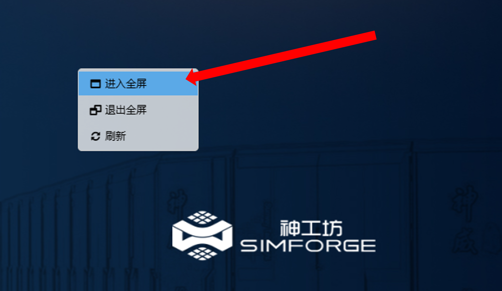
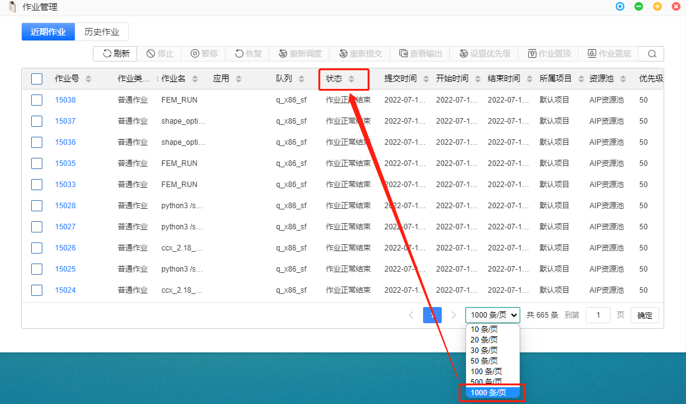
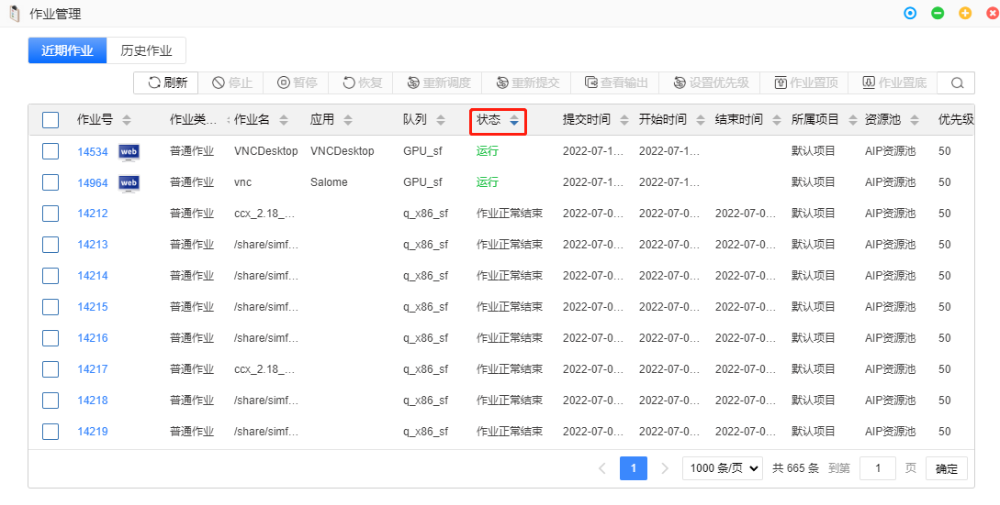
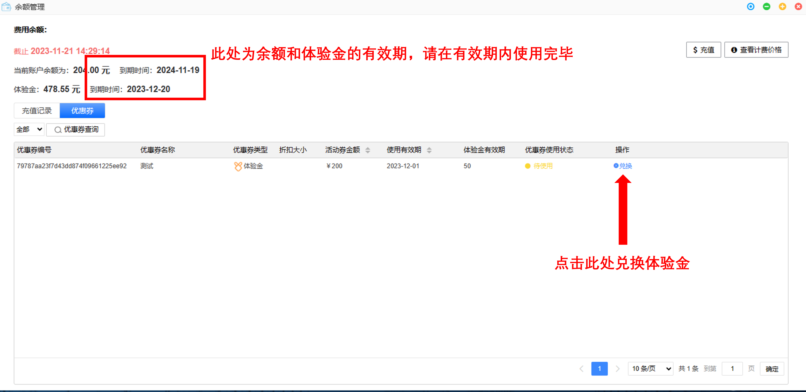

第6章 FAQ
图形相关
VNC和VDI有什么区别？
-
VDI：虚拟远程桌面接口
-
VNC：虚拟网络控制台
| 图形界面 | 额外操作 | 是否额外付费 | 性能 |
|---|---|---|---|
| VDI | 开通远程桌面 | 是 | 高 |
| VNC | 无需额外步骤 | 否 | 一般 |
{ref}仿真计算的GUI模式和图形应用均可使用上述两种方式提交。
如何使平台界面进入全屏模式？
右键点击平台界面的空白处，进入全屏模式

VNC模式启动图形作业，软件窗口最小化后，或者存在多个窗口，如何切换选择？
鼠标中键，根据窗口名称单击选择，可切换出对应窗口
VNC模式启动图形作业，VNC窗口关闭或60分钟后重新进入平台，如何重新进入VNC窗口？
点击作业管理，找到对应的图形作业，单击作业号进入作业详情，在该作业的详情页面右上角单击图形窗口或通过作业管理作业号右边小图标 即可重新进入。
即可重新进入。
 警告
不必要的VNC作业进程注意及时关闭，以免造成队列资源浪费和费用损失
警告
不必要的VNC作业进程注意及时关闭，以免造成队列资源浪费和费用损失
VDI模式启动图形作业，软件窗口最小化后，该如何恢复？
解锁底部dock栏，单击软件的窗口即可。
如何切换图形应用的运行模式？
已有实例，右击图标，选择默认实例，即可切换；若无对应实例，新建实例，设置图形应用以VNC或VDI模式启动。参考{ref}配置实例。
数据管理
文件、目录命名有什么要求？
- 文件、目录的命名不要带特殊字符（包括空格），可能会影响软件运行。建议使用A1_B2这样的命名方式。
- 文件命名字符长度不可以超过30个字符
如何在线编辑文件？
在线编辑文件有两种方式：一是通过数据管理，右击进行文本编辑；二是对于一些特殊后缀的文件，可开通VDI，通过shell 命令进行查看编辑。
上传文件速度慢？
可通过ftp公网上传
- 使用任意客户端（FileZilla、WinScp、Xftp等）
- 网络连接地址：ftp.hpc.simforge.cn
- 网络连接端口：21
- 连接用户名：神工坊账号、密码 注1：FileZilla下载地址：https://www.filezilla.cn/download 注1：WinScp下载地址:https://winscp.net/eng/download.php
作业管理
作业被系统强制终止
请确认作业提交时是否设置了运行时限。
重新进入门户后，运行的作业不在作业管理器首页？
点击作业管理，将显示条数增加以增加排序范围。

之后根据需要点击排序功能，如“状态”。

资源管理
队列的分类?
队列一般分为： - CPU计算节点：如q_x86_sf - GPU渲染节点：如GPU_sf
警告 请不要在使用仿真计算应用时提交至GPU渲染队列，作业将被管理员杀掉。
警告 请不要在使用图形应用时提交至CPU计算队列，作业将被管理员杀掉。
什么是远程队列？
远程队列是相较于本地队列而言的。神工坊2.0平台可调取的资源不局限于本地集群，也包含无锡超算甚至其他超算背后的海量资源。某些应用部署在其他集群，统一称为远程应用，提交作业时需要使用对应的远程队列。
例如：使用应用Abaqus614-u时，队列选择下拉框中的q_x86_sf即为本地队列，q_intel_share、q_x86_share即为远程队列，您可根据需求选择所用的队列。具体队列资源介绍见{ref}平台队列资源
计费相关
体验金和余额什么关系？
- 体验金是平台赠送金额，余额是用户自己充值的金额。扣款时，会优先扣除体验金，之后扣除余额。当全部扣除完毕时，48小时内平台只会对用户进行提醒。超过48小时，用户的作业和虚拟机桌面会被关闭。
- 在平台界面的右上角点击，选择【余额管理】可查看相关信息。
